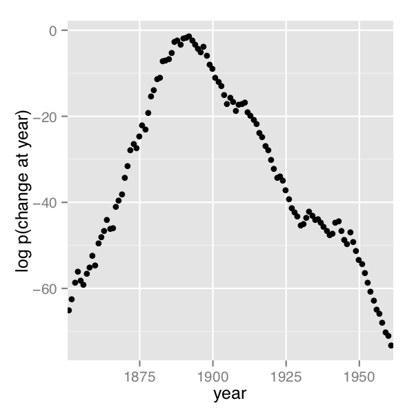
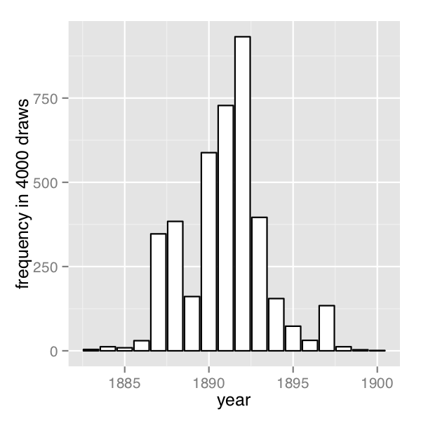

Latent Discrete Parameters
Stan does not support sampling discrete parameters. So it is not possible to directly translate BUGS or JAGS models with discrete parameters (i.e., discrete stochastic nodes). Nevertheless, it is possible to code many models that involve bounded discrete parameters by marginalizing out the discrete parameters.1
This chapter shows how to code several widely-used models involving latent discrete parameters. The next chapter, the clustering chapter, on clustering models, considers further models involving latent discrete parameters.
The benefits of marginalization
Although it requires some algebra on the joint probability function, a pleasant byproduct of the required calculations is the posterior expectation of the marginalized variable, which is often the quantity of interest for a model. This allows far greater exploration of the tails of the distribution as well as more efficient sampling on an iteration-by-iteration basis because the expectation at all possible values is being used rather than itself being estimated through sampling a discrete parameter.
Standard optimization algorithms, including expectation maximization (EM), are often provided in applied statistics papers to describe maximum likelihood estimation algorithms. Such derivations provide exactly the marginalization needed for coding the model in Stan.
Change point models
The first example is a model of coal mining disasters in the U.K. for the years 1851–1962.2
Model with latent discrete parameter
Fonnesbeck et al. (2013, sec. 3.1) provides a Poisson model of disaster \(D_t\) in year \(t\) with two rate parameters, an early rate (\(e\)) and late rate (\(l\)), that change at a given point in time \(s\). The full model expressed using a latent discrete parameter \(s\) is \[\begin{align*} e &\sim \textsf{exponential}(r_e) \\ l &\sim \textsf{exponential}(r_l) \\ s &\sim \textsf{uniform}(1, T) \\ D_t &\sim \textsf{Poisson}(t < s \; ? \; e \: : \: l) \end{align*}\]
The last line uses the conditional operator (also known as the ternary operator), which is borrowed from C and related languages. The conditional operator has the same behavior as its counterpart in C++.3
It uses a compact notation involving separating its three arguments by a question mark (?) and a colon (:). The conditional operator is defined by \[
c \; ? \; x_1 \: : \: x_2
=
\begin{cases}
\ x_1 & \quad\text{if } c \text{ is true (i.e., non-zero), and} \\
\ x_2 & \quad\text{if } c \text{ is false (i.e., zero).}
\end{cases}
\]
Marginalizing out the discrete parameter
To code this model in Stan, the discrete parameter \(s\) must be marginalized out to produce a model defining the log of the probability function \(p(e,l,D_t)\). The full joint probability factors as \[\begin{align*} p(e,l,s,D) &= p(e) \, p(l) \, p(s) \, p(D \mid s, e, l) \\ &= \textsf{exponential}(e \mid r_e) \ \textsf{exponential}(l \mid r_l) \, \textsf{uniform}(s \mid 1, T) \\ & \qquad \prod_{t=1}^T \textsf{Poisson}(D_t \mid t < s \; ? \; e \: : \: l). \end{align*}\]
To marginalize, an alternative factorization into prior and likelihood is used, \[ p(e,l,D) = p(e,l) \, p(D \mid e,l), \]
where the likelihood is defined by marginalizing \(s\) as \[\begin{align*} p(D \mid e,l) &= \sum_{s=1}^T p(s, D \mid e,l) \\ &= \sum_{s=1}^T p(s) \, p(D \mid s,e,l) \\ &= \sum_{s=1}^T \textsf{uniform}(s \mid 1,T) \, \prod_{t=1}^T \textsf{Poisson}(D_t \mid t < s \; ? \; e \: : \: l). \end{align*}\]
Stan operates on the log scale and thus requires the log likelihood, \[\begin{align*} \log p(D \mid e,l) &= \texttt{log}\mathtt{\_}\texttt{sum}\mathtt{\_}\texttt{exp}_{s=1}^T \left( \log \textsf{uniform}(s \mid 1, T) \vphantom{\sum_{t=1}^T}\right. \\ &\qquad \left. + \sum_{t=1}^T \log \textsf{Poisson}(D_t \mid t < s \; ? \; e \: : \: l) \right), \end{align*}\] where the log sum of exponents function is defined by \[ \texttt{log}\mathtt{\_}\texttt{sum}\mathtt{\_}\texttt{exp}_{n=1}^N \, \alpha_n = \log \sum_{n=1}^N \exp(\alpha_n). \]
The log sum of exponents function allows the model to be coded directly in Stan using the built-in function log_sum_exp, which provides both arithmetic stability and efficiency for mixture model calculations.
Coding the model in Stan
The Stan program for the change point model is shown in the figure below. The transformed parameter lp[s] stores the quantity \(\log p(s, D \mid e, l)\).
data {
real<lower=0> r_e;
real<lower=0> r_l;
int<lower=1> T;
array[T] int<lower=0> D;
}
transformed data {
real log_unif;
log_unif = -log(T);
}
parameters {
real<lower=0> e;
real<lower=0> l;
}
transformed parameters {
vector[T] lp;
lp = rep_vector(log_unif, T);
for (s in 1:T) {
for (t in 1:T) {
lp[s] = lp[s] + poisson_lpmf(D[t] | t < s ? e : l);
}
}
}
model {
e ~ exponential(r_e);
l ~ exponential(r_l);
target += log_sum_exp(lp);
}A change point model in which disaster rates D[t] have one rate, e, before the change point and a different rate, l, after the change point. The change point itself, s, is marginalized out as described in the text.
Although the change-point model is coded directly, the doubly nested loop used for s and t is quadratic in T. Luke Wiklendt pointed out that a linear alternative can be achieved by the use of dynamic programming similar to the forward-backward algorithm for Hidden Markov models; he submitted a slight variant of the following code to replace the transformed parameters block of the above Stan program.
transformed parameters {
vector[T] lp;
{
vector[T + 1] lp_e;
vector[T + 1] lp_l;
lp_e[1] = 0;
lp_l[1] = 0;
for (t in 1:T) {
lp_e[t + 1] = lp_e[t] + poisson_lpmf(D[t] | e);
lp_l[t + 1] = lp_l[t] + poisson_lpmf(D[t] | l);
}
lp = rep_vector(log_unif + lp_l[T + 1], T)
+ head(lp_e, T) - head(lp_l, T);
}
}As should be obvious from looking at it, it has linear complexity in T rather than quadratic. The result for the mining-disaster data is about 20 times faster; the improvement will be greater for larger T.
The key to understanding Wiklendt’s dynamic programming version is to see that head(lp_e) holds the forward values, whereas lp_l[T + 1] - head(lp_l, T) holds the backward values; the clever use of subtraction allows lp_l to be accumulated naturally in the forward direction.
Fitting the model with MCMC
This model is easy to fit using MCMC with NUTS in its default configuration. Convergence is fast and sampling produces roughly one effective sample every two iterations. Because it is a relatively small model (the inner double loop over time is roughly 20,000 steps), it is fast.
The value of lp for each iteration for each change point is available because it is declared as a transformed parameter. If the value of lp were not of interest, it could be coded as a local variable in the model block and thus avoid the I/O overhead of saving values every iteration.
Posterior distribution of the discrete change point
The value of lp[s] in a given iteration is given by \(\log
p(s,D \mid e,l)\) for the values of the early and late rates, \(e\) and \(l\), in the iteration. In each iteration after convergence, the early and late disaster rates, \(e\) and \(l\), are drawn from the posterior \(p(e,l \mid D)\) by MCMC sampling and the associated lp calculated. The value of lp may be normalized to calculate \(p(s \mid e,l,D)\) in each iteration, based on on the current values of \(e\) and \(l\). Averaging over iterations provides an unnormalized probability estimate of the change point being \(s\) (see below for the normalizing constant), \[\begin{align*}
p(s \mid D) &\propto q(s \mid D) \\
&= \frac{1}{M} \sum_{m=1}^{M} \exp(\texttt{lp}[m,s]).
\end{align*}\] where \(\texttt{lp}[m,s]\) represents the value of lp in posterior draw \(m\) for change point \(s\). By averaging over draws, \(e\) and \(l\) are themselves marginalized out, and the result has no dependence on a given iteration’s value for \(e\) and \(l\). A final normalization then produces the quantity of interest, the posterior probability of the change point being \(s\) conditioned on the data \(D\), \[
p(s \mid D) = \frac{q(s \mid D)}{\sum_{s'=1}^T q(s' \mid D)}.
\]
A plot of the values of \(\log p(s \mid D)\) computed using Stan 2.4’s default MCMC implementation is shown in the posterior plot.
Log probability of change point being in year, calculated analytically.

The frequency of change points generated by sampling the discrete change points.

In order their range of estimates be visible, the first plot is on the log scale and the second plot on the linear scale; note the narrower range of years in the second plot resulting from sampling. The posterior mean of \(s\) is roughly 1891.
Discrete sampling
The generated quantities block may be used to draw discrete parameter values using the built-in pseudo-random number generators. For example, with lp defined as above, the following program draws a random value for s at every iteration.
generated quantities {
int<lower=1, upper=T> s;
s = categorical_logit_rng(lp);
}A posterior histogram of draws for \(s\) is shown on the second change point posterior figure above.
Compared to working in terms of expectations, discrete sampling is highly inefficient, especially for tails of distributions, so this approach should only be used if draws from a distribution are explicitly required. Otherwise, expectations should be computed in the generated quantities block based on the posterior distribution for s given by softmax(lp).
Posterior covariance
The discrete sample generated for \(s\) can be used to calculate covariance with other parameters. Although the sampling approach is straightforward, it is more statistically efficient (in the sense of requiring far fewer iterations for the same degree of accuracy) to calculate these covariances in expectation using lp.
Multiple change points
There is no obstacle in principle to allowing multiple change points. The only issue is that computation increases from linear to quadratic in marginalizing out two change points, cubic for three change points, and so on. There are three parameters, e, m, and l, and two loops for the change point and then one over time, with log densities being stored in a matrix.
matrix[T, T] lp;
lp = rep_matrix(log_unif, T);
for (s1 in 1:T) {
for (s2 in 1:T) {
for (t in 1:T) {
lp[s1,s2] = lp[s1,s2]
+ poisson_lpmf(D[t] | t < s1 ? e : (t < s2 ? m : l));
}
}
}The matrix can then be converted back to a vector using to_vector before being passed to log_sum_exp.
Mark-recapture models
A widely applied field method in ecology is to capture (or sight) animals, mark them (e.g., by tagging), then release them. This process is then repeated one or more times, and is often done for populations on an ongoing basis. The resulting data may be used to estimate population size.
The first subsection describes a simple mark-recapture model that does not involve any latent discrete parameters. The following subsections describes the Cormack-Jolly-Seber model, which involves latent discrete parameters for animal death.
Simple mark-recapture model
In the simplest case, a one-stage mark-recapture study produces the following data
- \(M\) : number of animals marked in first capture,
- \(C\) : number animals in second capture, and
- \(R\) : number of marked animals in second capture.
The estimand of interest is
- \(N\) : number of animals in the population.
Despite the notation, the model will take \(N\) to be a continuous parameter; just because the population must be finite doesn’t mean the parameter representing it must be. The parameter will be used to produce a real-valued estimate of the population size.
The Lincoln-Petersen (Lincoln 1930; Petersen 1896) method for estimating population size is \[ \hat{N} = \frac{M C}{R}. \]
This population estimate would arise from a probabilistic model in which the number of recaptured animals is distributed binomially, \[ R \sim \textsf{binomial}(C, M / N) \] given the total number of animals captured in the second round (\(C\)) with a recapture probability of \(M/N\), the fraction of the total population \(N\) marked in the first round.
data {
int<lower=0> M;
int<lower=0> C;
int<lower=0, upper=min(M, C)> R;
}
parameters {
real<lower=(C - R + M)> N;
}
model {
R ~ binomial(C, M / N);
}A probabilistic formulation of the Lincoln-Petersen estimator for population size based on data from a one-step mark-recapture study. The lower bound on \(N\) is necessary to efficiently eliminate impossible values.
The probabilistic variant of the Lincoln-Petersen estimator can be directly coded in Stan as shown in the Lincon-Petersen model figure. The Lincoln-Petersen estimate is the maximum likelihood estimate (MLE) for this model.
To ensure the MLE is the Lincoln-Petersen estimate, an improper uniform prior for \(N\) is used; this could (and should) be replaced with a more informative prior if possible, based on knowledge of the population under study.
The one tricky part of the model is the lower bound \(C - R + M\) placed on the population size \(N\). Values below this bound are impossible because it is otherwise not possible to draw \(R\) samples out of the \(C\) animals recaptured. Implementing this lower bound is necessary to ensure sampling and optimization can be carried out in an unconstrained manner with unbounded support for parameters on the transformed (unconstrained) space. The lower bound in the declaration for \(C\) implies a variable transform \(f : (C-R+M,\infty) \rightarrow (-\infty,+\infty)\) defined by \(f(N) = \log(N - (C - R + M))\); the reference manual contains full details of all constrained parameter transforms.
Cormack-Jolly-Seber with discrete parameter
The Cormack-Jolly-Seber (CJS) model (Cormack 1964; Jolly 1965; Seber 1965) is an open-population model in which the population may change over time due to death; the presentation here draws heavily on Schofield (2007).
The basic data are
- \(I\): number of individuals,
- \(T\): number of capture periods, and
- \(y_{i,t}\): Boolean indicating if individual \(i\) was captured at time \(t\).
Each individual is assumed to have been captured at least once because an individual only contributes information conditionally after they have been captured the first time.
There are two Bernoulli parameters in the model,
- \(\phi_t\) : probability that animal alive at time \(t\) survives until \(t + 1\) and
- \(p_t\) : probability that animal alive at time \(t\) is captured at time \(t\).
These parameters will both be given uniform priors, but information should be used to tighten these priors in practice.
The CJS model also employs a latent discrete parameter \(z_{i,t}\) indicating for each individual \(i\) whether it is alive at time \(t\), distributed as \[ z_{i,t} \sim \mathsf{Bernoulli}(z_{i,t-1} \; ? \; 0 \: : \: \phi_{t-1}). \]
The conditional prevents the model positing zombies; once an animal is dead, it stays dead. The data distribution is then simple to express conditional on \(z\) as \[ y_{i,t} \sim \mathsf{Bernoulli}(z_{i,t} \; ? \; 0 \: : \: p_t). \]
The conditional enforces the constraint that dead animals cannot be captured.
Collective Cormack-Jolly-Seber model
This subsection presents an implementation of the model in terms of counts for different history profiles for individuals over three capture times. It assumes exchangeability of the animals in that each is assigned the same capture and survival probabilities.
In order to ease the marginalization of the latent discrete parameter \(z_{i,t}\), the Stan models rely on a derived quantity \(\chi_t\) for the probability that an individual is never captured again if it is alive at time \(t\) (if it is dead, the recapture probability is zero). this quantity is defined recursively by \[ \chi_t = \begin{cases} 1 & \quad\text{if } t = T \\ (1 - \phi_t) + \phi_t (1 - p_{t+1}) \chi_{t+1} & \quad\text{if } t < T \end{cases} \]
The base case arises because if an animal was captured in the last time period, the probability it is never captured again is 1 because there are no more capture periods. The recursive case defining \(\chi_{t}\) in terms of \(\chi_{t+1}\) involves two possibilities: (1) not surviving to the next time period, with probability \((1 - \phi_t)\), or (2) surviving to the next time period with probability \(\phi_t\), not being captured in the next time period with probability \((1 - p_{t+1})\), and not being captured again after being alive in period \(t+1\) with probability \(\chi_{t+1}\).
With three capture times, there are eight captured/not-captured profiles an individual may have. These may be naturally coded as binary numbers as follows.
\[ \begin{array}{crclc} \hline & \qquad\qquad & captures & \qquad\qquad & \\ \mathrm{profile} & 1 & 2 & 3 & \mathrm{probability} \\ \hline 0 & - & - & - & n/a \\ 1 & - & - & + & n/a \\ 2 & - & + & - & \chi_2 \\ 3 & - & + & + & \phi_2 \, p_3 \\ 4 & + & - & - & \chi_1 \\ 5 & + & - & + & \phi_1 \, (1 - p_2) \, \phi_2 \, p_3 \\ 6 & + & + & - & \phi_1 \, p_2 \, \chi_2 \\ 7 & + & + & + & \phi_1 \, p_2 \, \phi_2 \, p_3 \\ \hline \end{array} \]
History 0, for animals that are never captured, is unobservable because only animals that are captured are observed. History 1, for animals that are only captured in the last round, provides no information for the CJS model, because capture/non-capture status is only informative when conditioned on earlier captures. For the remaining cases, the contribution to the likelihood is provided in the final column.
By defining these probabilities in terms of \(\chi\) directly, there is no need for a latent binary parameter indicating whether an animal is alive at time \(t\) or not. The definition of \(\chi\) is typically used to define the likelihood (i.e., marginalize out the latent discrete parameter) for the CJS model (Schofield 2007).
The Stan model defines \(\chi\) as a transformed parameter based on parameters \(\phi\) and \(p\). In the model block, the log probability is incremented for each history based on its count. This second step is similar to collecting Bernoulli observations into a binomial or categorical observations into a multinomial, only it is coded directly in the Stan program using target += rather than being part of a built-in probability function.
The following is the Stan program for the Cormack-Jolly-Seber mark-recapture model that considers counts of individuals with observation histories of being observed or not in three capture periods
data {
array[7] int<lower=0> history;
}
parameters {
array[2] real<lower=0, upper=1> phi;
array[3] real<lower=0, upper=1> p;
}
transformed parameters {
array[2] real<lower=0, upper=1> chi;
chi[2] = (1 - phi[2]) + phi[2] * (1 - p[3]);
chi[1] = (1 - phi[1]) + phi[1] * (1 - p[2]) * chi[2];
}
model {
target += history[2] * log(chi[2]);
target += history[3] * (log(phi[2]) + log(p[3]));
target += history[4] * (log(chi[1]));
target += history[5] * (log(phi[1]) + log1m(p[2])
+ log(phi[2]) + log(p[3]));
target += history[6] * (log(phi[1]) + log(p[2])
+ log(chi[2]));
target += history[7] * (log(phi[1]) + log(p[2])
+ log(phi[2]) + log(p[3]));
}
generated quantities {
real<lower=0, upper=1> beta3;
beta3 = phi[2] * p[3];
}Identifiability
The parameters \(\phi_2\) and \(p_3\), the probability of death at time 2 and probability of capture at time 3 are not identifiable, because both may be used to account for lack of capture at time 3. Their product, \(\beta_3 = \phi_2 \, p_3\), is identified. The Stan model defines beta3 as a generated quantity. Unidentified parameters pose a problem for Stan’s samplers’ adaptation. Although the problem posed for adaptation is mild here because the parameters are bounded and thus have proper uniform priors, it would be better to formulate an identified parameterization. One way to do this would be to formulate a hierarchical model for the \(p\) and \(\phi\) parameters.
Individual Cormack-Jolly-Seber model
This section presents a version of the Cormack-Jolly-Seber (CJS) model cast at the individual level rather than collectively as in the previous subsection. It also extends the model to allow an arbitrary number of time periods. The data will consist of the number \(T\) of capture events, the number \(I\) of individuals, and a boolean flag \(y_{i,t}\) indicating if individual \(i\) was observed at time \(t\). In Stan,
data {
int<lower=2> T;
int<lower=0> I;
array[I, T] int<lower=0, upper=1> y;
}The advantages to the individual-level model is that it becomes possible to add individual “random effects” that affect survival or capture probability, as well as to avoid the combinatorics involved in unfolding \(2^T\) observation histories for \(T\) capture times.
Utility functions
The individual CJS model is written involves several function definitions. The first two are used in the transformed data block to compute the first and last time period in which an animal was captured.4
functions {
int first_capture(array[] int y_i) {
for (k in 1:size(y_i)) {
if (y_i[k]) {
return k;
}
}
return 0;
}
int last_capture(array[] int y_i) {
for (k_rev in 0:(size(y_i) - 1)) {
int k;
k = size(y_i) - k_rev;
if (y_i[k]) {
return k;
}
}
return 0;
}
// ...
}These two functions are used to define the first and last capture time for each individual in the transformed data block.5
transformed data {
array[I] int<lower=0, upper=T> first;
array[I] int<lower=0, upper=T> last;
vector<lower=0, upper=I>[T] n_captured;
for (i in 1:I) {
first[i] = first_capture(y[i]);
}
for (i in 1:I) {
last[i] = last_capture(y[i]);
}
n_captured = rep_vector(0, T);
for (t in 1:T) {
for (i in 1:I) {
if (y[i, t]) {
n_captured[t] = n_captured[t] + 1;
}
}
}
}The transformed data block also defines n_captured[t], which is the total number of captures at time t. The variable n_captured is defined as a vector instead of an integer array so that it can be used in an elementwise vector operation in the generated quantities block to model the population estimates at each time point.
The parameters and transformed parameters are as before, but now there is a function definition for computing the entire vector chi, the probability that if an individual is alive at t that it will never be captured again.
parameters {
vector<lower=0, upper=1>[T - 1] phi;
vector<lower=0, upper=1>[T] p;
}
transformed parameters {
vector<lower=0, upper=1>[T] chi;
chi = prob_uncaptured(T, p, phi);
}The definition of prob_uncaptured, from the functions block, is
functions {
// ...
vector prob_uncaptured(int T, vector p, vector phi) {
vector[T] chi;
chi[T] = 1.0;
for (t in 1:(T - 1)) {
int t_curr;
int t_next;
t_curr = T - t;
t_next = t_curr + 1;
chi[t_curr] = (1 - phi[t_curr])
+ phi[t_curr]
* (1 - p[t_next])
* chi[t_next];
}
return chi;
}
}The function definition directly follows the mathematical definition of \(\chi_t\), unrolling the recursion into an iteration and defining the elements of chi from T down to 1.
The model
Given the precomputed quantities, the model block directly encodes the CJS model’s log likelihood function. All parameters are left with their default uniform priors and the model simply encodes the log probability of the observations q given the parameters p and phi as well as the transformed parameter chi defined in terms of p and phi.
model {
for (i in 1:I) {
if (first[i] > 0) {
for (t in (first[i]+1):last[i]) {
1 ~ bernoulli(phi[t - 1]);
y[i, t] ~ bernoulli(p[t]);
}
1 ~ bernoulli(chi[last[i]]);
}
}
}The outer loop is over individuals, conditional skipping individuals i which are never captured. The never-captured check depends on the convention of the first-capture and last-capture functions returning 0 for first if an individual is never captured.
The inner loop for individual i first increments the log probability based on the survival of the individual with probability phi[t - 1]. The outcome of 1 is fixed because the individual must survive between the first and last capture (i.e., no zombies). The loop starts after the first capture, because all information in the CJS model is conditional on the first capture.
In the inner loop, the observed capture status y[i, t] for individual i at time t has a Bernoulli distribution based on the capture probability p[t] at time t.
After the inner loop, the probability of an animal never being seen again after being observed at time last[i] is included, because last[i] was defined to be the last time period in which animal i was observed.
Identified parameters
As with the collective model described in the previous subsection, this model does not identify phi[T - 1] and p[T], but does identify their product, beta. Thus beta is defined as a generated quantity to monitor convergence and report.
generated quantities {
real beta;
// ...
beta = phi[T - 1] * p[T];
// ...
}The parameter p[1] is also not modeled and will just be uniform between 0 and 1. A more finely articulated model might have a hierarchical or time-series component, in which case p[1] would be an unknown initial condition and both phi[T - 1] and p[T] could be identified.
Population size estimates
The generated quantities also calculates an estimate of the population mean at each time t in the same way as in the simple mark-recapture model as the number of individuals captured at time t divided by the probability of capture at time t. This is done with the elementwise division operation for vectors (./) in the generated quantities block.
generated quantities {
// ...
vector<lower=0>[T] pop;
// ...
pop = n_captured ./ p;
pop[1] = -1;
}Generalizing to individual effects
All individuals are modeled as having the same capture probability, but this model could be easily generalized to use a logistic regression here based on individual-level inputs to be used as predictors.
Data coding and diagnostic accuracy models
Although seemingly disparate tasks, the rating/coding/annotation of items with categories and diagnostic testing for disease or other conditions, share several characteristics which allow their statistical properties to be modeled similarly.
Diagnostic accuracy
Suppose you have diagnostic tests for a condition of varying sensitivity and specificity. Sensitivity is the probability a test returns positive when the patient has the condition and specificity is the probability that a test returns negative when the patient does not have the condition. For example, mammograms and puncture biopsy tests both test for the presence of breast cancer. Mammograms have high sensitivity and low specificity, meaning lots of false positives, whereas puncture biopsies are the opposite, with low sensitivity and high specificity, meaning lots of false negatives.
There are several estimands of interest in such studies. An epidemiological study may be interested in the prevalence of a kind of infection, such as malaria, in a population. A test development study might be interested in the diagnostic accuracy of a new test. A health care worker performing tests might be interested in the disease status of a particular patient.
Data coding
Humans are often given the task of coding (equivalently rating or annotating) data. For example, journal or grant reviewers rate submissions, a political study may code campaign commercials as to whether they are attack ads or not, a natural language processing study might annotate Tweets as to whether they are positive or negative in overall sentiment, or a dentist looking at an X-ray classifies a patient as having a cavity or not. In all of these cases, the data coders play the role of the diagnostic tests and all of the same estimands are in play — data coder accuracy and bias, true categories of items being coded, or the prevalence of various categories of items in the data.
Noisy categorical measurement model
In this section, only categorical ratings are considered, and the challenge in the modeling for Stan is to marginalize out the discrete parameters.
Dawid and Skene (1979) introduce a noisy-measurement model for coding and apply it in the epidemiological setting of coding what doctors say about patient histories; the same model can be used for diagnostic procedures.
Data
The data for the model consists of \(J\) raters (diagnostic tests), \(I\) items (patients), and \(K\) categories (condition statuses) to annotate, with \(y_{i, j} \in \{1, \dotsc, K\}\) being the rating provided by rater \(j\) for item \(i\). In a diagnostic test setting for a particular condition, the raters are diagnostic procedures and often \(K=2\), with values signaling the presence or absence of the condition.6
It is relatively straightforward to extend Dawid and Skene’s model to deal with the situation where not every rater rates each item exactly once.
Model parameters
The model is based on three parameters, the first of which is discrete:
- \(z_i\) : a value in \(\{1, \dotsc, K\}\) indicating the true category of item \(i\),
- \(\pi\) : a \(K\)-simplex for the prevalence of the \(K\) categories in the population, and
- \(\theta_{j,k}\) : a \(K\)-simplex for the response of annotator \(j\) to an item of true category \(k\).
Noisy measurement model
The true category of an item is assumed to be generated by a simple categorical distribution based on item prevalence, \[ z_i \sim \textsf{categorical}(\pi). \]
The rating \(y_{i, j}\) provided for item \(i\) by rater \(j\) is modeled as a categorical response of rater \(i\) to an item of category \(z_i\),7 \[ y_{i, j} \sim \textsf{categorical}(\theta_{j,\pi_{z[i]}}). \]
Priors and hierarchical modeling
Dawid and Skene provided maximum likelihood estimates for \(\theta\) and \(\pi\), which allows them to generate probability estimates for each \(z_i\).
To mimic Dawid and Skene’s maximum likelihood model, the parameters \(\theta_{j,k}\) and \(\pi\) can be given uniform priors over \(K\)-simplexes. It is straightforward to generalize to Dirichlet priors, \[ \pi \sim \textsf{Dirichlet}(\alpha) \] and \[ \theta_{j,k} \sim \textsf{Dirichlet}(\beta_k) \] with fixed hyperparameters \(\alpha\) (a vector) and \(\beta\) (a matrix or array of vectors). The prior for \(\theta_{j,k}\) must be allowed to vary in \(k\), so that, for instance, \(\beta_{k,k}\) is large enough to allow the prior to favor better-than-chance annotators over random or adversarial ones.
Because there are \(J\) coders, it would be natural to extend the model to include a hierarchical prior for \(\beta\) and to partially pool the estimates of coder accuracy and bias.
Marginalizing out the true category
Because the true category parameter \(z\) is discrete, it must be marginalized out of the joint posterior in order to carry out sampling or maximum likelihood estimation in Stan. The joint posterior factors as \[ p(y, \theta, \pi) = p(y \mid \theta,\pi) \, p(\pi) \, p(\theta), \] where \(p(y \mid \theta,\pi)\) is derived by marginalizing \(z\) out of \[ p(z, y \mid \theta, \pi) = \prod_{i=1}^I \left( \textsf{categorical}(z_i \mid \pi) \prod_{j=1}^J \textsf{categorical}(y_{i, j} \mid \theta_{j, z[i]}) \right). \]
This can be done item by item, with \[ p(y \mid \theta, \pi) = \prod_{i=1}^I \sum_{k=1}^K \left( \textsf{categorical}(k \mid \pi) \prod_{j=1}^J \textsf{categorical}(y_{i, j} \mid \theta_{j, k}) \right). \]
In the missing data model, only the observed labels would be used in the inner product.
Dawid and Skene (1979) derive exactly the same equation in their Equation (2.7), required for the E-step in their expectation maximization (EM) algorithm. Stan requires the marginalized probability function on the log scale, \[\begin{align*}
\log p(y \mid \theta, \pi)
&= \sum_{i=1}^I \log \left( \sum_{k=1}^K \exp
\left(\log \textsf{categorical}(k \mid \pi) \vphantom{\sum_{j=1}^J}\right.\right.
\left.\left. + \ \sum_{j=1}^J
\log \textsf{categorical}(y_{i, j} \mid \theta_{j, k})
\right) \right),
\end{align*}\] which can be directly coded using Stan’s built-in log_sum_exp function.
Stan implementation
The Stan program for the Dawid and Skene model is provided below (Dawid and Skene 1979).
data {
int<lower=2> K;
int<lower=1> I;
int<lower=1> J;
array[I, J] int<lower=1, upper=K> y;
vector<lower=0>[K] alpha;
vector<lower=0>[K] beta[K];
}
parameters {
simplex[K] pi;
array[J, K] simplex[K] theta;
}
transformed parameters {
array[I] vector[K] log_q_z;
for (i in 1:I) {
log_q_z[i] = log(pi);
for (j in 1:J) {
for (k in 1:K) {
log_q_z[i, k] = log_q_z[i, k]
+ log(theta[j, k, y[i, j]]);
}
}
}
}
model {
pi ~ dirichlet(alpha);
for (j in 1:J) {
for (k in 1:K) {
theta[j, k] ~ dirichlet(beta[k]);
}
}
for (i in 1:I) {
target += log_sum_exp(log_q_z[i]);
}
}The model marginalizes out the discrete parameter \(z\), storing the unnormalized conditional probability \(\log q(z_i=k|\theta,\pi)\) in log_q_z[i, k].
The Stan model converges quickly and mixes well using NUTS starting at diffuse initial points, unlike the equivalent model implemented with Gibbs sampling over the discrete parameter. Reasonable weakly informative priors are \(\alpha_k = 3\) and \(\beta_{k,k} = 2.5 K\) and \(\beta_{k,k'} = 1\) if \(k \neq k'\). Taking \(\alpha\) and \(\beta_k\) to be unit vectors and applying optimization will produce the same answer as the expectation maximization (EM) algorithm of Dawid and Skene (1979).
Inference for the true category
The quantity log_q_z[i] is defined as a transformed parameter. It encodes the (unnormalized) log of \(p(z_i \mid \theta,
\pi)\). Each iteration provides a value conditioned on that iteration’s values for \(\theta\) and \(\pi\). Applying the softmax function to log_q_z[i] provides a simplex corresponding to the probability mass function of \(z_i\) in the posterior. These may be averaged across the iterations to provide the posterior probability distribution over each \(z_i\).
The mathematics of recovering marginalized parameters
Introduction
This section describes in more detail the mathematics of statistical inference using the output of marginalized Stan models, such as those presented in the last three sections. It provides a mathematical explanation of why and how certain manipulations of Stan’s output produce valid summaries of the posterior distribution when discrete parameters have been marginalized out of a statistical model. Ultimately, however, fully understanding the mathematics in this section is not necessary to fit models with discrete parameters using Stan.
Throughout, the model under consideration consists of both continuous parameters, \(\Theta\), and discrete parameters, \(Z\). It is also assumed that \(Z\) can only take finitely many values, as is the case for all the models described in this chapter of the User’s Guide. To simplify notation, any conditioning on data is suppressed in this section, except where specified. As with all Bayesian analyses, however, all inferences using models with marginalized parameters are made conditional on the observed data.
Estimating expectations
When performing Bayesian inference, interest often centers on estimating some (constant) low-dimensional summary statistics of the posterior distribution. Mathematically, we are interested in estimating \(\mu\), say, where \(\mu = \mathbb{E}[g(\Theta, Z)]\) and \(g(\cdot)\) is an arbitrary function. An example of such a quantity is \(\mathbb{E}[\Theta]\), the posterior mean of the continuous parameters, where we would take \(g(\theta, z) = \theta\). To estimate \(\mu\) the most common approach is to sample a series of values, at least approximately, from the posterior distribution of the parameters of interest. The numerical values of these draws can then be used to calculate the quantities of interest. Often, this process of calculation is trivial, but more care is required when working with marginalized posteriors as we describe in this section.
If both \(\Theta\) and \(Z\) were continuous, Stan could be used to sample \(M\) draws from the joint posterior \(p_{\Theta, Z}(\theta, z)\) and then estimate \(\mu\) with \[ \hat{\mu} = \frac{1}{M} \sum_{i = 1}^M {g(\theta^{(i)}, z^{(i)})}. \] Given \(Z\) is discrete, however, Stan cannot be used to sample from the joint posterior (or even to do optimization). Instead, as outlined in the previous sections describing specific models, the user can first marginalize out \(Z\) from the joint posterior to give the marginalized posterior \(p_\Theta(\theta)\). This marginalized posterior can then be implemented in Stan as usual, and Stan will give draws \(\{\theta^{(i)}\}_{i = 1}^M\) from the marginalized posterior.
Using only these draws, how can we estimate \(\mathbb{E}[g(\Theta, Z)]\)? We can use a conditional estimator. We explain in more detail below, but at a high level the idea is that, for each function \(g\) of interest, we compute \[ h(\Theta) = \mathbb{E}[g(\Theta, Z) \mid \Theta] \] and then estimate \(\mathbb{E}[g(\Theta, Z)]\) with \[ \hat{\mu} = \frac{1}{M} \sum_{i = 1}^M h(\theta^{(i)}). \] This estimator is justified by the law of iterated expectation, the fact that \[ \mathbb{E}[h(\Theta)] = \mathbb{E}[\mathbb{E}[g(\Theta, Z)] \mid \Theta] = \mathbb{E}[g(\Theta, Z)] = \mu. \] Using this marginalized estimator provides a way to estimate the expectation of any function \(g(\cdot)\) for all combinations of discrete or continuous parameters in the model. However, it presents a possible new challenge: evaluating the conditional expectation \(\mathbb{E}[g(\Theta, Z) \mid \Theta]\).
Evaluating the conditional expectation
Fortunately, the discrete nature of \(Z\) makes evaluating \(\mathbb{E}[g(\Theta, Z) \mid \Theta]\) easy. The function \(h(\Theta)\) can be written as: \[ h(\Theta) = \mathbb{E}[g(\Theta, Z) \mid \Theta] = \sum_{k} g(\Theta, k) \Pr[Z = k \mid \Theta], \] where we sum over the possible values of the latent discrete parameters. An essential part of this formula is the probability of the discrete parameters conditional on the continuous parameters, \(\Pr[Z = k \mid \Theta]\). More detail on how this quantity can be calculated is included below. Note that if \(Z\) takes infinitely many values then computing the infinite sums will involve, potentially computationally expensive, approximation.
When \(g(\theta, z)\) is a function of either \(\theta\) or \(z\) only, the above formula simplifies further.
In the first case, where \(g(\theta, z) = g(\theta)\), we have: \[\begin{align*} h(\Theta) &= \sum_{k} g(\Theta) \Pr[Z = k \mid \Theta] \\ &= g(\Theta) \sum_{k} \Pr[Z = k \mid \Theta] \\ &= g(\Theta). \end{align*}\] This means that we can estimate \(\mathbb{E}[g(\Theta)]\) with the standard, seemingly unconditional, estimator: \[ \frac{1}{M} \sum_{i = 1}^M g(\theta^{(i)}). \] Even after marginalization, computing expectations of functions of the continuous parameters can be performed as if no marginalization had taken place.
In the second case, where \(g(\theta, z) = g(z)\), the conditional expectation instead simplifies as follows: \[ h(\Theta) = \sum_{k} g(k) \Pr[Z = k \mid \Theta]. \] An important special case of this result is when \(g(\theta, z) = \textrm{I}(z = k)\), where \(\textrm{I}\) is the indicator function. This choice allows us to recover the probability mass function of the discrete random variable \(Z\), since \(\mathbb{E}[\textrm{I}(Z = k)] = \Pr[Z = k]\). In this case, \[ h(\Theta) = \sum_{k} \textrm{I}(z = k) \Pr[Z = k \mid \Theta] = \Pr[Z = k \mid \Theta]. \] The quantity \(\Pr[Z = k]\) can therefore be estimated with: \[ \frac{1}{M} \sum_{i = 1}^M \Pr[Z = k \mid \Theta = \theta^{(i)}]. \] When calculating this conditional probability it is important to remember that we are also conditioning on the observed data, \(Y\). That is, we are really estimating \(\Pr[Z = k \mid Y]\) with \[ \frac{1}{M} \sum_{i = 1}^M \Pr[Z = k \mid \Theta = \theta^{(i)}, Y]. \] This point is important as it suggests one of the main ways of calculating the required conditional probability. Using Bayes’s theorem gives us \[ \Pr[Z = k \mid \Theta = \theta^{(i)}, Y] = \frac{\Pr[Y \mid Z = k, \Theta = \theta^{(i)}] \Pr[Z = k \mid \Theta = \theta^{(i)}]} {\sum_{k = 1}^K \Pr[Y \mid Z = k, \Theta = \theta^{(i)}] \Pr[Z = k \mid \Theta = \theta^{(i)}]}. \] Here, \(\Pr[Y \mid \Theta = \theta^{(i)}, Z = k]\) is the likelihood conditional on a particular value of the latent variables. Crucially, all elements of the expression can be calculated using the draws from the posterior of the continuous parameters and knowledge of the model structure.
Other than the use of Bayes’s theorem, \(\Pr[Z = k \mid \theta = \theta^{(i)}, Y]\) can also be extracted by coding the Stan model to include the conditional probability explicitly (as is done for the Dawid–Skene model).
For a longer introduction to the mathematics of marginalization in Stan, which also covers the connections between Rao–Blackwellization and marginalization, see Pullin, Gurrin, and Vukcevic (2021).
References
Footnotes
The computations are similar to those involved in expectation maximization (EM) algorithms (Dempster, Laird, and Rubin 1977).↩︎
The source of the data is (Jarrett 1979), which itself is a note correcting an earlier data collection.↩︎
The R counterpart,
ifelse, is slightly different in that it is typically used in a vectorized situation. The conditional operator is not (yet) vectorized in Stan.↩︎An alternative would be to compute this on the outside and feed it into the Stan model as preprocessed data. Yet another alternative encoding would be a sparse one recording only the capture events along with their time and identifying the individual captured.↩︎
Both functions return 0 if the individual represented by the input array was never captured. Individuals with no captures are not relevant for estimating the model because all probability statements are conditional on earlier captures. Typically they would be removed from the data, but the program allows them to be included even though they make not contribution to the log probability function.↩︎
Diagnostic procedures are often ordinal, as in stages of cancer in oncological diagnosis or the severity of a cavity in dental diagnosis. Dawid and Skene’s model may be used as is or naturally generalized for ordinal ratings using a latent continuous rating and cutpoints as in ordinal logistic regression.↩︎
In the subscript, \(z_i\) is written as \(z[i]\) to improve legibility.↩︎